Hoja de contacto — fotos reales extraídas de la web actual (F1)
35 fotos descargadas en vivo de hispaniolaaquaticadventures.com, optimizadas a WebP
(5.3 MB → 1.7 MB, -67%) en app/public/fotos/. Revisa y marca qué NO usar —
por defecto todo lo de aquí entra al diseño en las fases siguientes (F2-F6).
Hero (candidatos, se usa 1)
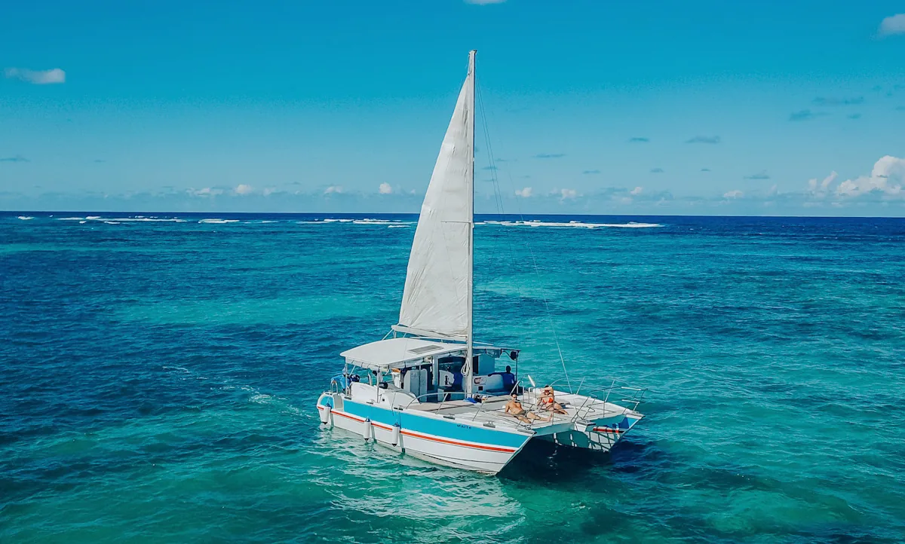
hero-catamaran-21200×722 · el hero REAL del home actual (bg-catamaran-2.jpg)
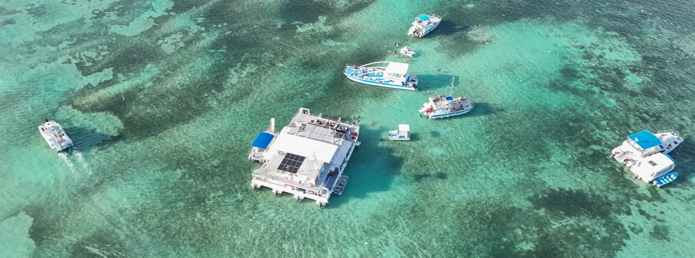
hero-catamaran-11920×715 · alterno, más panorámico (bg-catamaran.jpg, usado en fichas)
Tours (grid de 4, home)
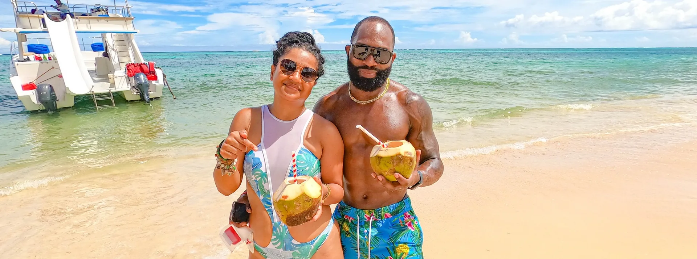
Semi-Privado Premium1920×715
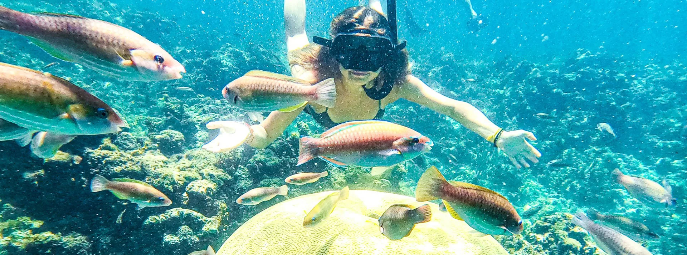
Snorkel Lovers1920×715
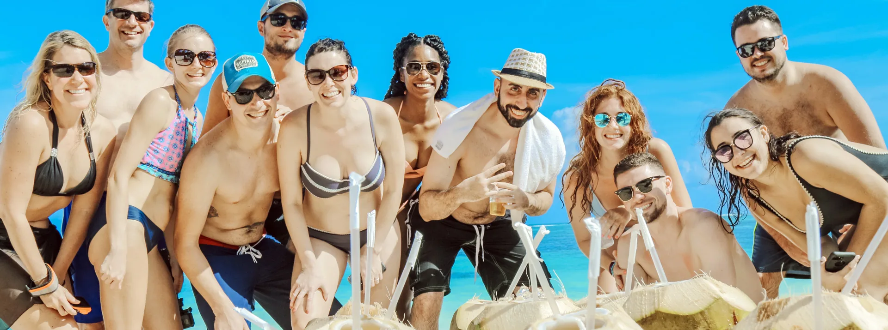
Charter Privado1920×715
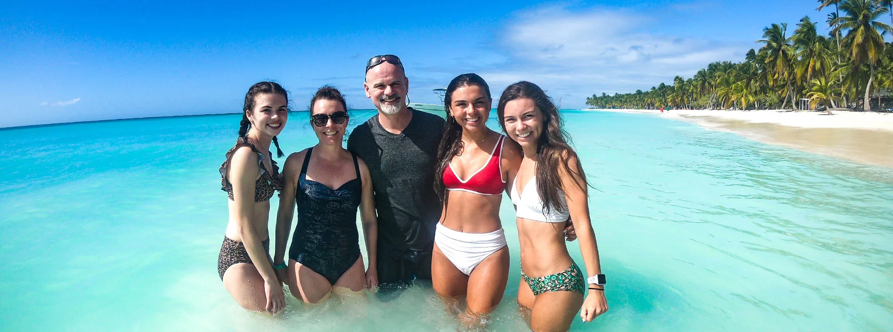
Isla Saona1920×715
Comida a bordo (diferenciador — bodegón grande)
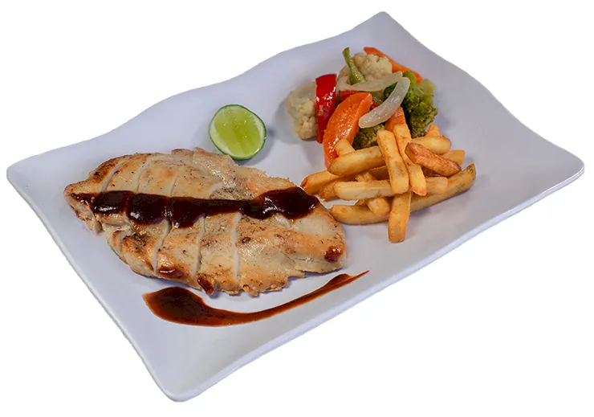
chicken-bodegon740×519 · plato de pollo, buena resolución
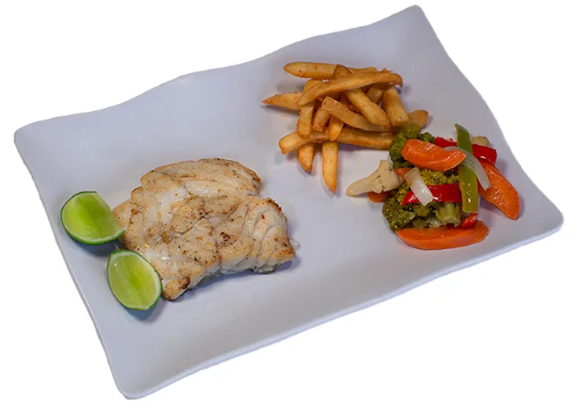
fish-bodegon740×518 · plato de pescado, buena resolución
Comida a bordo (los 4 platos del menú — thumbnails)
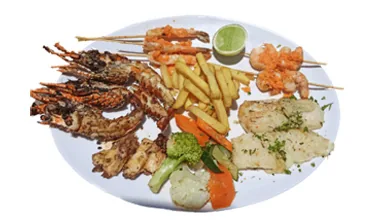
Mariscos368×224
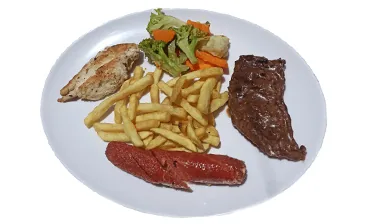
Carne368×224
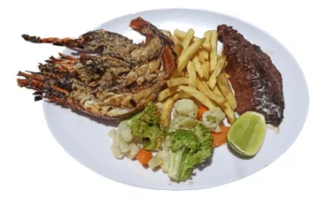
Surf & Turf368×224
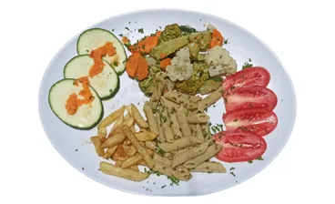
Vegetariano368×224
Galería — Semi-Privado (7)
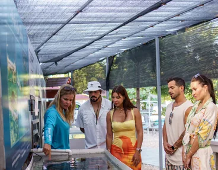
1
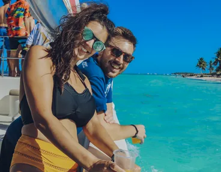
2
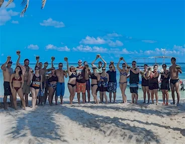
3
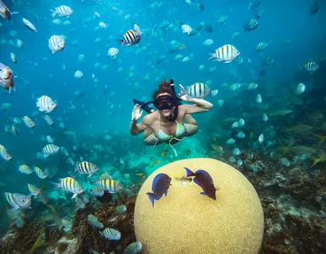
4
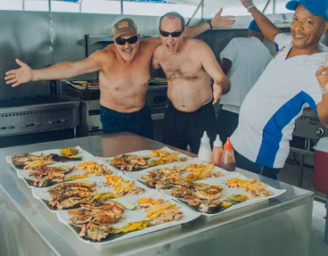
5
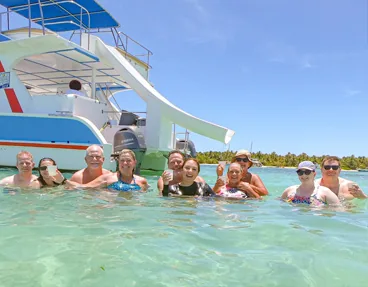
6
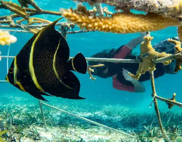
7
Galería — Snorkel Lovers / familias (9)
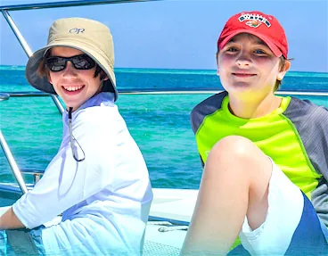
1
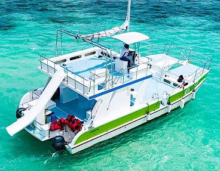
2
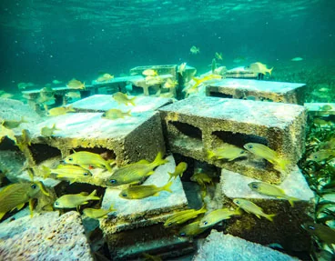
3
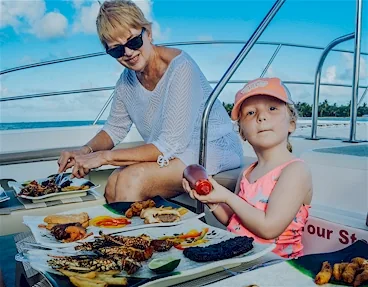
4
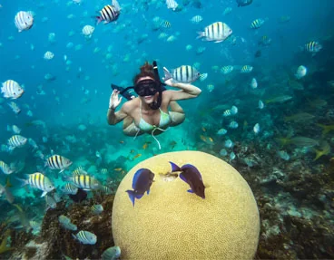
5
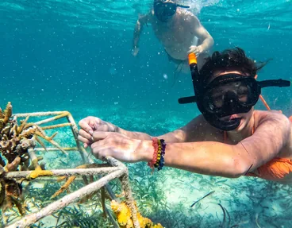
6
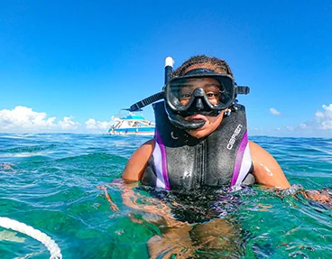
7
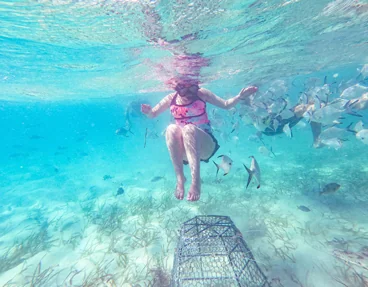
8
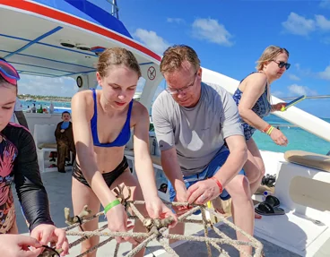
9
Galería — Charter Privado (7)
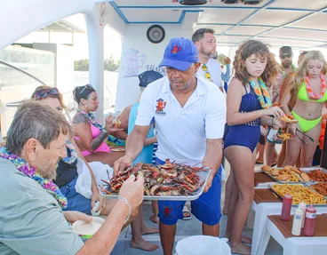
1
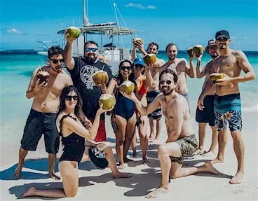
2
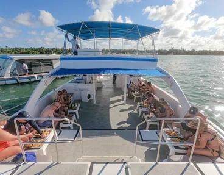
3
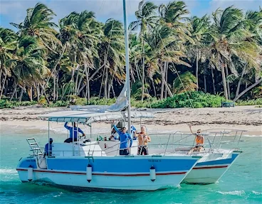
4
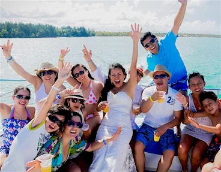
5
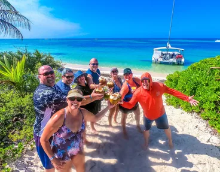
6
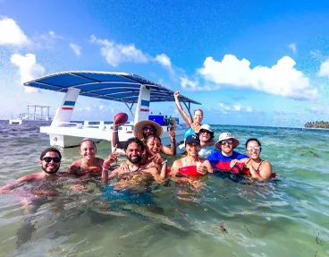
7
Nota sobre Isla Saona: la foto del tour existe y es buena (banner real de su página),
pero no hay fotos de "galería Memories" propias de Saona en la web actual — la galería de
la home solo cubre Semi-Privado/Snorkel Lovers/Charter Privado. Coherente con que Saona ya
está marcado como producto con datos pendientes de confirmar (precio, duración, capacidad).
Qué falta a propósito: no hay foto para "Surf & Turf" ni "Vegetariano" en alta
resolución (solo los thumbnails 368×224 que ya existían en la web) — no se generó ninguna
con IA ni se usó stock, siguiendo la decisión de fotos 100% reales.